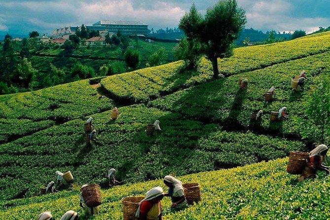
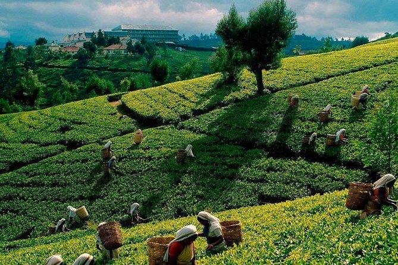

Escape to “Little England” in the heart of Sri Lanka's tea country. Experience cool, crisp mountain air, manicured colonial-era gardens, and views of endless emerald tea plantations. At 1,868 meters above sea level, Nuwara Eliya offers the perfect climate respite and a unique journey into Ceylon's colonial history and world-famous tea culture.
Why Visit Nuwara Eliya?
A Climate Unlike Anywhere Else in Sri Lanka
Trade tropical heat for refreshing mountain breezes! With average temperatures between 10–20°C (50–68°F), Nuwara Eliya provides a cool escape where sweaters, blankets, and hot tea are part of the experience. Misty mornings and chilly evenings enhance its magical atmosphere.

Step Back in Time to "Little England"
Wander through streets lined with charming Tudor-style buildings, visit the iconic red-brick post office, and explore colonial-era hotels that preserve British architectural heritage. Nuwara Eliya’s unique blend of history and scenery feels like stepping into a different time and place.

Experience the World's Finest Tea at Its Source
Nuwara Eliya produces Ceylon’s most prized “high-grown” tea — known for its delicate aroma and golden liquor. Visiting a working tea estate allows you to:
- Walk through lush green tea terraces
- Witness the traditional tea-making process
- Taste freshly brewed high-grown tea
- Try seasonal tea plucking for fun

 
